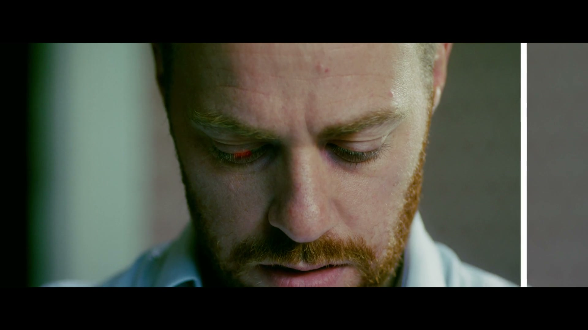

VOL. 01 · NO. 01
10 SEPTEMBER 2026 · ABUJA, NIGERIAPORTFOLIO EDITION
❧ Page Two · The Portfolio
Selected Features.
All
Commercial
Short form
Film
VFX
3D Animation Colour Grading Motion Graphics
7 features in this section

Play 00:31
Featured study · Colour grading · 2026
Red Eye Effect
A cinematic colour study that turns a quiet close up into an unsettling red eye reveal through restrained grading and selective colour work.
Colour Grade · Selective Correction · Finishing
Watch the film ↗
Portfolio feature · Commercial · VFX · 2026
Momentum
A high energy brand film treatment with editorial pacing, VFX polish, colour finishing, and motion led emphasis.
Editing · VFX · Colour Grade · Motion
Production Notes ↗
Portfolio feature · Short form · 2026
In Frame
A social first series built around fast cuts, clear structure, captions, and platform ready rhythm.
Editing · Social Content
Production Notes ↗
Portfolio feature · Film · 2026
Between Takes
Documentary style finishing focused on visual continuity, careful tone, and colour managed delivery.
Colour Grade · Finishing
Production Notes ↗
Portfolio feature · VFX · 3D Motion · 2026
Visual Rhythm
Complex visual effects composite with 3D product motion, particle passes, and dynamic speed ramping.
VFX · 3D Motion · Compositing
Production Notes ↗
Portfolio feature · Visual ID · 3D Animation · 2026
Make It Land.
Identity in motion for campaigns that need clarity, tempo, 3D animated detail, and a memorable final frame.
Creative Direction · 3D Animation · Motion Graphics
Production Notes ↗
Portfolio feature · Commercial · 2026
Lumina
Luxury brand spot featuring rich skin tone rendering, natural grain structure, and subtle titles.
Editing · Colour Grade
Production Notes ↗
❧ Training & Creative Development
Where I Learned.

Filmmaking · Editing · Visual Effects
Shoot First
Structured training in editing, compositing, colour grading, Fusion, and practical VFX workflows, building stronger decisions from the first frame through the final shot.
Visit Shoot First ↗